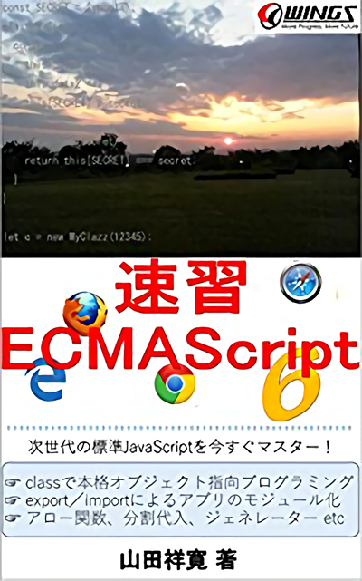
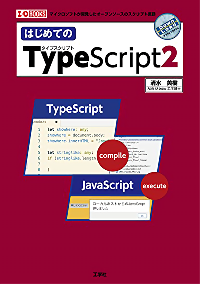

いきなりTypeScriptに入るよりも先に、ECMAScript6を一通り学習しておくのが強く推奨されるところです。
基礎でありながらも、この内容を一通り覚えておけば、ECMAScript6文法の基本理解としては十分です。

Visual Studio Code を使ってTypeScript2の文法を学習してゆきます。
ECMAScript6の基礎をある程度収めている人であれば、難なく読み進められる内容となっています。

TypeScriptの仕様ページを日本語翻訳してまとめたサイトです。
「はじめてのTypeScript2」の後であれば、「各文法」をフォーカスしたリンク先の内容を読み進め、
動作を確認し、身に着けていくことが出来るハズです。
TypeScriptの文法の習得要件としては、以上のものが全てといって良く、
分かりやすいモノ、理解しやすいモノになっていると言えます。